| LTTng Kernel Analysis | ||
|---|---|---|
|
|
|
|
| LTTng Tracer Control | LTTng-UST Analyses | |
Historically, LTTng was developped to trace the Linux kernel and, over time, a number of kernel-oriented analysis views were developped and organized in a perspective.
This section presents a description of the LTTng Kernel Perspective.
The LTTng Kernel perspective is built upon the Tracing Perspective, re-organizes them slightly and adds the following views:
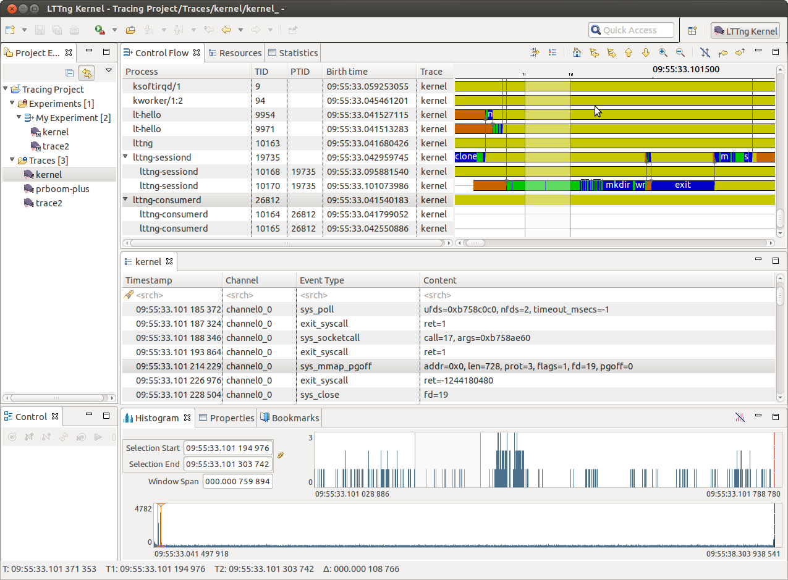
The perspective can be opened from the Eclipse Open Perspective dialog ( Window > Open Perspective... > Other).
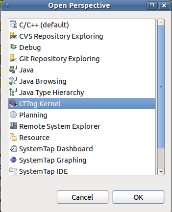
The Control Flow view is a LTTng-specific view that shows per-process events graphically. The LTTng Kernel analysis is executed the first time a LTTng Kernel is opened. After opening the trace, the element Control Flow is added under the LTTng Kernel Analysis tree element in the Project Explorer. To open the view, double-click the Control Flow tree element.
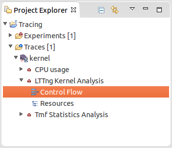
Alternatively, select Control Flow under LTTng within the Show View window ( Window -> Show View -> Other...):
You should get something like this:
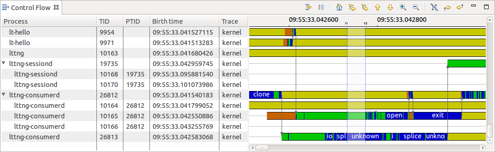
The view is divided into the following important sections: process tree and information, control flow and the toolbar.
The following sections provide detailed information for each part of the Control Flow View.
Processes are organized as a tree within this view. This way, child and parent processes are easy to identify.
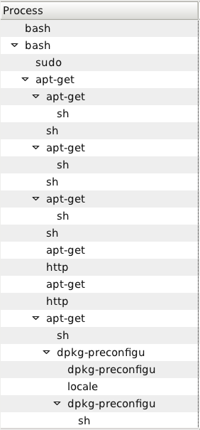
The layout is based on the states computed from the trace events.
A given process may be shown at different places within the tree since the nodes are unique (TID, birth time) couples. This means that if process B of parent A dies, you'll still see it in the tree. If process A forks process B again, it will be shown as a different node since it won't have the same birth time (and probably not the same TID). This has the advantage that the tree, once loaded, never changes: horizontal scrolling within the control flow remains possible.
The TID column shows the process node's thread ID and the PTID column shows its parent thread ID (nothing is shown if the process has no parent).
This part of the Control Flow View is probably the most interesting one. Using the mouse, you can navigate through the trace (go left, right) and zoom on a specific region to inspect its details.
The colored bars you see represent states for the associated process node. When a process state changes in time, so does the color. For state SYSCALL the name of the system call is displayed in the state bar. States colors legend is available through a toolbar button:
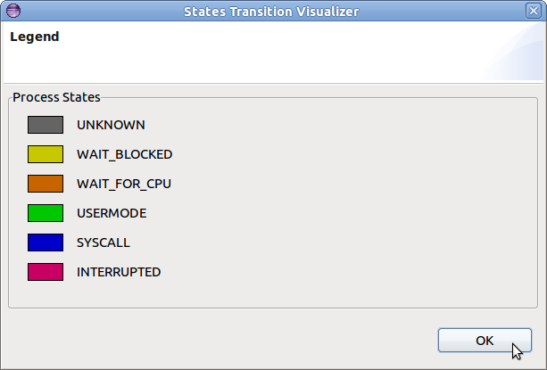
This dark yellow is what you'll see most of the time since scheduling puts processes on hold while others run.
The vertical blue line with T1 above it is the current selection indicator. When a time range is selected, the region between the begin and end time of the selection will be shaded and two lines with T1 and T2 above will be displayed. The time stamps corresponding to T1, T2 and their delta are shown in the status line when the mouse is hovering over the control flow.
Arrows can be displayed that follow the execution of each CPU across processes. The arrows indicate when the scheduler switches from one process to another for a given CPU. The CPU being followed is indicated on the state tooltip. When the scheduler switches to and from the idle process, the arrow skips to the next process which executes on the CPU after the idle process. Note that an appropriate zoom level is required for all arrows to be displayed.
The display of arrows is optional and can be toggled using the Hide Arrows toolbar button. It is also possible to follow a CPU's execution across state changes and the scheduler's process switching using the Follow CPU Forward/Backward toolbar buttons.
The states flow is usable with the mouse. The following actions are set:
When the current time indicator is changed (when clicking in the states flow), all the other views are synchronized. For example, the Events Editor will show the event matching the current time indicator. The reverse behaviour is also implemented: selecting an event within the Events View will update the Control Flow View current time indicator.
You'll notice small dots over the colored bars at some places:
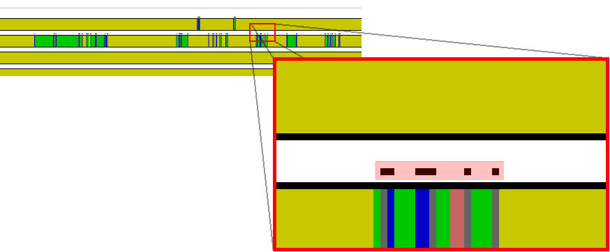
Those dots mean the underlying region is incomplete: there's not enough pixels to view all the events. In other words, you have to zoom in.
When zooming in, small dots start to disappear:
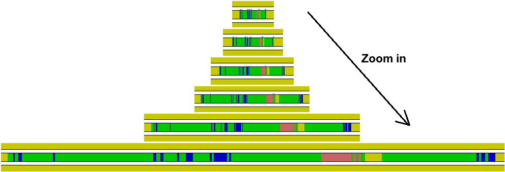
When no dots are left, you are viewing all the events and states within that region.
To zoom in on a specific region, right-click and drag in order to draw a time range:
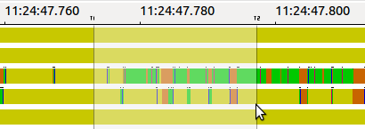
The states flow horizontal space will only show the selected region.
Hover the cursor over a colored bar and a tooltip will pop up:
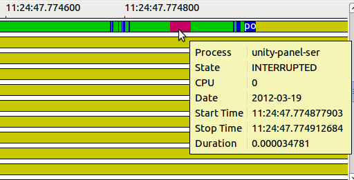
The tooltip indicates:
The Control Flow View toolbar, located at the top right of the view, has shortcut buttons to perform common actions:
| Show View Filter | Opens the process filter dialog | |
| Show Legend | Displays the states legend | |
| Reset the Time Scale to Default | Resets the zoom window to the full range | |
| Select Previous Event | Selects the previous state for the selected process | |
| Select Next Event | Selects the next state for the selected process | |
| Select Previous Process | Selects the previous process | |
| Select Next Process | Selects the next process | |
| Zoom In | Zooms in on the selection by 50% | |
| Zoom Out | Zooms out on the selection by 50% | |
| Hide Arrows | Toggles the display of arrows on or off | |
| Follow CPU Backward | Selects the previous state following CPU execution across processes | |
| Follow CPU Forward | Selects the next state following CPU execution across processes |
This view is specific to LTTng kernel traces. The LTTng Kernel analysis is executed the first time a LTTng Kernel is opened. After opening the trace, the element Resources is added under the LTTng Kernel Analysis tree element of the Project Explorer. To open the view, double-click the Resources tree element.
Alternatively, go in Window -> Show View -> Other... and select LTTng/Resources in the list.
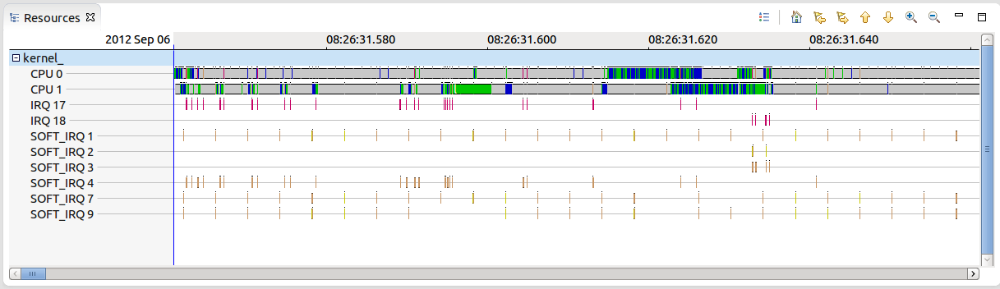
This view shows the state of system resources i.e. if changes occured during the trace either on CPUs, IRQs or soft IRQs, it will appear in this view. The left side of the view present a list of resources that are affected by at least one event of the trace. The right side illustrate the state in which each resource is at some point in time. For state USERMODE it also prints the process name in the state bar. For state SYSCALL the name of the system call is displayed in the state region.
Just like other views, according to which trace points and system calls are activated, the content of this view may change from one trace to another.
Each state are represented by one color so it is faster to say what is happening.
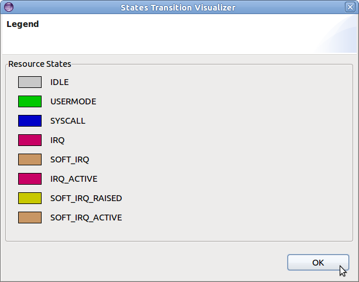
To go through the state of a resource, you first have to select the resource and the timestamp that interest you. For the latter, you can pick some time before the interesting part of the trace.
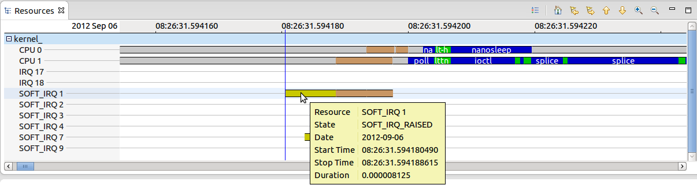
Then, by selecting Next Event, it will show the next state transition and the event that occured at this time.
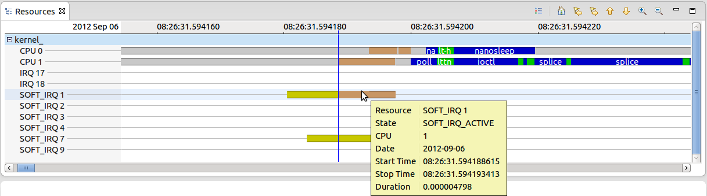
This view is also synchronized with the others : Histogram View, Events Editor, Control Flow View, etc.
See Control Flow View's Using the mouse and Zoom region .
See Control Flow View's Incomplete regions .
The Resources View toolbar, located at the top right of the view, has shortcut buttons to perform common actions:
| Show Legend | Displays the states legend | |
| Reset the Time Scale to Default | Resets the zoom window to the full range | |
| Select Previous Event | Selects the previous state for the selected resource | |
| Select Next Event | Selects the next state for the selected resource | |
| Select Previous Resource | Selects the previous resource | |
| Select Next Resource | Selects the next resource | |
| Zoom In | Zooms in on the selection by 50% | |
| Zoom Out | Zooms out on the selection by 50% |
The CPU Usage analysis and view is specific to LTTng Kernel traces. The CPU usage is derived from a kernel trace as long as the sched_switch event was enabled during the collection of the trace. This analysis is executed the first time that the CPU Usage view is opened after opening the trace. To open the view, double-click on the CPU Usage tree element under the LTTng Kernel Analysis tree element of the Project Explorer.
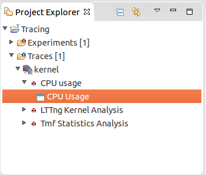
Now, the CPU Usage view will show:
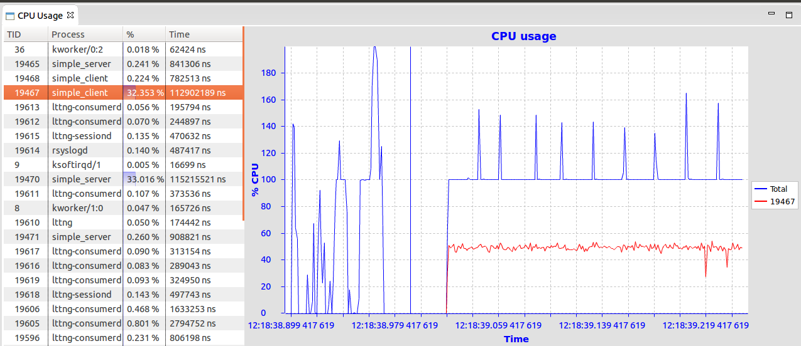
The view is divided into the following important sections: Process Information and the CPU Usage Chart.
The Process Information is displayed on the left side of the view and shows all threads that were executing on all available CPUs in the current time range. For each process, it shows in different columns the thread ID (TID), process name (Process), the average (%) execution time and the actual execution time (Time) during the current time range. It shows all threads that were executing on the CPUs in the current time range.
The CPU Usage Chart on the right side of the view, plots the total time spent on all CPUs of all processes and the time of the selected process.
The CPU Usage chart is usable with the mouse. The following actions are set:
Hover the cursor over a line of the chart and a tooltip will pop up with the following information:
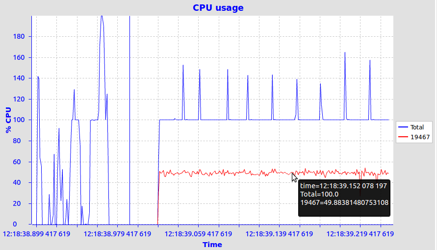
The LTTng Kernel Events editor is the plain TMF Events Editor, except that it provides its own specialized viewer to replace the standard one. In short, it has exactly the same behaviour but the layout is slightly different:
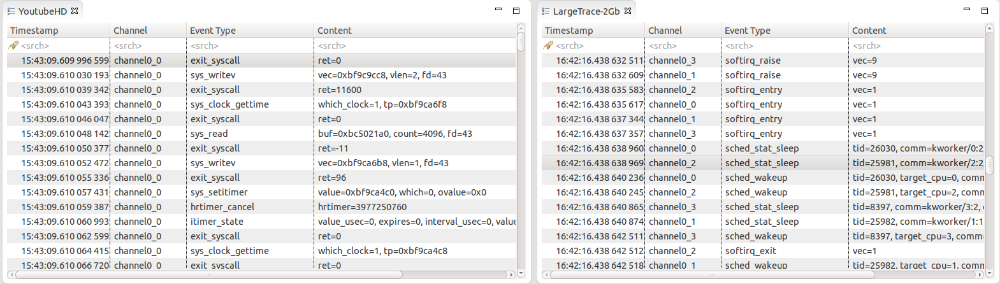
|
|

|
|
| LTTng Tracer Control | LTTng-UST Analyses |